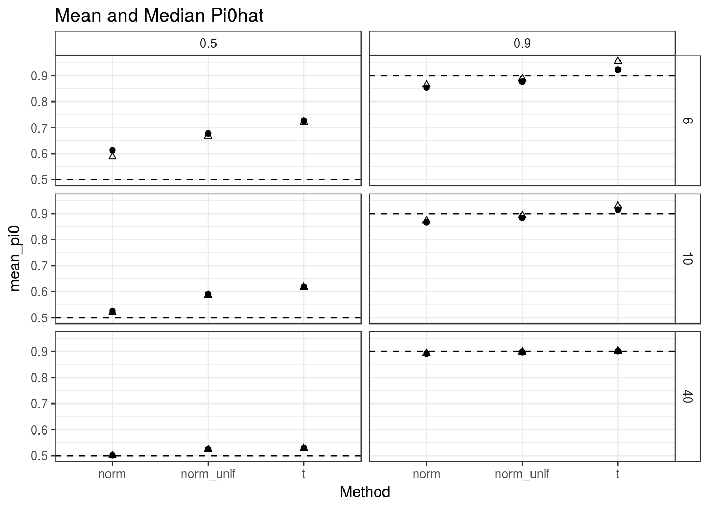

Here, I run the mouthwash simulations under \(\alpha = 0\). Most methods are now the limma-shrunk methods. I additionally have:
The simulations were implemented here with code here and here.
df = Inf, I think this is evidence that my code is correct.library(tidyverse)## Loading tidyverse: ggplot2
## Loading tidyverse: tibble
## Loading tidyverse: tidyr
## Loading tidyverse: readr
## Loading tidyverse: purrr
## Loading tidyverse: dplyr## Conflicts with tidy packages ----------------------------------------------## filter(): dplyr, stats
## lag(): dplyr, statsdat <- as_data_frame(readRDS(file = "../output/alpha_1_sims_out/sims_out_alpha0_moreruns.RDS"))
subdat <- select(dat, nullpi, Nsamp, contains("pi0_")) %>%
gather(key = "Method", value = "pi0hat", contains("pi0"))
subdat$Method <- stringr::str_replace(subdat$Method, "pi0_", "")
subdat$type <- rep("other", nrow(subdat))
subdat$type[stringr::str_detect(subdat$Method, "m$")] <- "MAD"
subdat$type[stringr::str_detect(subdat$Method, "norm$")] <- "other"
subdat$type[stringr::str_detect(subdat$Method, "c$")] <- "ctl"
ggplot(data = subdat, mapping = aes(y = pi0hat, x = Method, fill = type)) +
facet_grid(Nsamp~nullpi) +
geom_boxplot() +
theme_bw() +
theme(axis.text.x = element_text(angle = 90, hjust = 1, vjust = 0.5),
strip.background = element_rect(fill = "white")) +
geom_hline(mapping = aes(yintercept = nullpi), lty = 2, lwd = 1, color = "gray50") +
ggtitle("Pi0hat")From the above plot, MOUTHWASH methods do the best in terms of calibration.
Let’s look at MOUTHWASH methods in more detail. We have the following key:
mouth_dat <- filter(subdat, stringr::str_detect(Method, "mouthwash"))
mouth_dat$Method <- stringr::str_replace(mouth_dat$Method, "ash_mouthwash_", "")
ggplot(data = mouth_dat, mapping = aes(y = pi0hat, x = Method)) +
facet_grid(Nsamp~nullpi) +
geom_boxplot() +
theme_bw() +
theme(axis.text.x = element_text(angle = 90, hjust = 1, vjust = 0.5),
strip.background = element_rect(fill = "white")) +
geom_hline(mapping = aes(yintercept = nullpi), lty = 2, lwd = 1, color = "gray50") +
ggtitle("Pi0hat for MOUTHWASH")Thoughts:
summary_data <- mouth_dat %>% group_by(nullpi, Nsamp, Method) %>%
summarize(median_pi0 = median(pi0hat),
mean_pi0 = mean(pi0hat), sd_pi0 = sd(pi0hat), n = length(pi0hat)) %>%
ungroup() %>%
mutate(lower = mean_pi0 - 1.96 * sd_pi0 / sqrt(n),
upper = mean_pi0 + 1.96 * sd_pi0 / sqrt(n))
dummydat <- expand.grid(unique(summary_data$nullpi), unique(summary_data$Nsamp))
names(dummydat) <- c("nullpi", "Nsamp")
ggplot(data = summary_data, mapping = aes(x = Method, y = mean_pi0)) +
geom_point() +
geom_point(mapping = aes(y = median_pi0), pch = 2) +
geom_linerange(mapping = aes(ymin = lower, ymax = upper)) +
facet_grid(Nsamp ~ nullpi) +
theme_bw() +
theme(strip.background = element_rect(fill = "white")) +
geom_hline(mapping = aes(yintercept = nullpi), lty = 2) +
ggtitle("Mean and Median Pi0hat")
rm(list = ls())
dat <- as_data_frame(readRDS(file = "../output/alpha_1_sims_out/sims_out_alpha0_moreruns.RDS"))
subdat <- select(dat, nullpi, Nsamp, contains("auc_")) %>%
gather(key = "Method", value = "auc", contains("auc"))
subdat$Method <- stringr::str_replace(subdat$Method, "auc_", "")
subdat$type <- rep("other", nrow(subdat))
subdat$type[stringr::str_detect(subdat$Method, "m$")] <- "MAD"
subdat$type[stringr::str_detect(subdat$Method, "norm$")] <- "other"
subdat$type[stringr::str_detect(subdat$Method, "c$")] <- "ctl"
ggplot(data = subdat, mapping = aes(y = auc, x = Method, fill = type)) +
facet_grid(Nsamp~nullpi) +
geom_boxplot() +
theme_bw() +
theme(axis.text.x = element_text(angle = 90, hjust = 1, vjust = 0.5),
strip.background = element_rect(fill = "white")) +
ggtitle("auc")sumdat <- subdat %>% group_by(Method, Nsamp, nullpi) %>%
summarize(med_auc = median(auc)) %>%
ungroup()
sumdat$type <- rep("other", nrow(sumdat))
sumdat$type[stringr::str_detect(sumdat$Method, "m$")] <- "MAD"
sumdat$type[stringr::str_detect(sumdat$Method, "norm$")] <- "other"
sumdat$type[stringr::str_detect(sumdat$Method, "c$")] <- "ctl"
maxdat <- sumdat %>% group_by(Nsamp, nullpi) %>%
summarize(max_auc = max(med_auc)) %>%
ungroup()
ggplot(data = sumdat, mapping = aes(x = Method, y = med_auc, color = type)) +
geom_point() +
theme_bw() +
theme(axis.text.x = element_text(angle = 90, hjust = 1, vjust = 0.5),
strip.background = element_rect(fill = "white")) +
facet_grid(Nsamp ~ nullpi) +
geom_hline(data = maxdat, mapping = aes(yintercept = max_auc), lty = 2) +
ylab("Median AUC") +
ggtitle("Median AUC")Look at just the mouthwash methods.
mouth_dat <- filter(sumdat, stringr::str_detect(Method, "mouthwash"))
mouth_dat$Method <- stringr::str_replace(mouth_dat$Method, "ash_mouthwash_", "")
ggplot(data = mouth_dat, mapping = aes(x = Method, y = med_auc)) +
geom_point() +
theme_bw() +
theme(axis.text.x = element_text(angle = 90, hjust = 1, vjust = 0.5),
strip.background = element_rect(fill = "white")) +
facet_grid(Nsamp ~ nullpi, scales = "free_y") +
geom_hline(data = maxdat, mapping = aes(yintercept = max_auc), lty = 2) +
ylab("Median AUC") +
ggtitle("Median AUC")We’ll calculate bootstrap intervals real quick
mouth_sub <- filter(subdat, stringr::str_detect(Method, "mouthwash"))
boot_med <- function(x, boot_num = 1000) {
bvec <- rep(NA, length = boot_num)
for (bindex in 1:boot_num) {
bvec[bindex] <- median(sample(x, replace = TRUE))
}
return(c(median(x), quantile(bvec, probs = c(0.025, 0.975))))
}
boot_out <- group_by(mouth_sub, Method, nullpi, Nsamp) %>%
do(setNames(data.frame(t(boot_med(.$auc))), c("median", "lower", "upper")))
boot_out$Method <- stringr::str_replace(boot_out$Method, "ash_mouthwash_", "")The CI’s definitely still overlap. It seems that the normal and t now perform about equally. But this is in terms of median auc. The next section recapitulates my results with mean auc.
ggplot(data = boot_out, mapping = aes(y = median, x = Method, ymin = lower, ymax = upper)) +
geom_point() +
geom_linerange() +
theme_bw() +
facet_grid(Nsamp ~ nullpi, scales = "free_y") +
theme(axis.text.x = element_text(angle = 90, hjust = 1, vjust = 0.5),
strip.background = element_rect(fill = "white")) +
geom_hline(data = maxdat, mapping = aes(yintercept = max_auc), lty = 2)rm(list = ls())
dat <- as_data_frame(readRDS(file = "../output/alpha_1_sims_out/sims_out_alpha0_moreruns.RDS"))
subdat <- select(dat, nullpi, Nsamp, contains("auc_")) %>%
gather(key = "Method", value = "auc", contains("auc"))
subdat$Method <- stringr::str_replace(subdat$Method, "auc_", "")
subdat$type <- rep("other", nrow(subdat))
subdat$type[stringr::str_detect(subdat$Method, "m$")] <- "MAD"
subdat$type[stringr::str_detect(subdat$Method, "norm$")] <- "other"
subdat$type[stringr::str_detect(subdat$Method, "c$")] <- "ctl"
sumdat <- subdat %>% group_by(Method, Nsamp, nullpi) %>%
summarize(med_auc = mean(auc), sd_auc = sd(auc), n = length(auc)) %>%
ungroup() %>%
mutate(lower = med_auc - 1.96 * sd_auc / sqrt(n),
upper = med_auc + 1.96 * sd_auc / sqrt(n))
sumdat$type <- rep("other", nrow(sumdat))
sumdat$type[stringr::str_detect(sumdat$Method, "m$")] <- "MAD"
sumdat$type[stringr::str_detect(sumdat$Method, "norm$")] <- "other"
sumdat$type[stringr::str_detect(sumdat$Method, "c$")] <- "ctl"
maxdat <- sumdat %>% group_by(Nsamp, nullpi) %>%
summarize(max_auc = max(med_auc)) %>%
ungroup()
ggplot(data = sumdat, mapping = aes(x = Method, y = med_auc, color = type)) +
geom_point() +
theme_bw() +
theme(axis.text.x = element_text(angle = 90, hjust = 1, vjust = 0.5),
strip.background = element_rect(fill = "white")) +
facet_grid(Nsamp ~ nullpi) +
geom_hline(data = maxdat, mapping = aes(yintercept = max_auc), lty = 2) +
ylab("mean AUC") +
ggtitle("mean AUC")Look at just the mouthwash methods.
mouth_dat <- filter(sumdat, stringr::str_detect(Method, "mouthwash"))
mouth_dat$Method <- stringr::str_replace(mouth_dat$Method, "ash_mouthwash_", "")
ggplot(data = mouth_dat, mapping = aes(x = Method, y = med_auc)) +
geom_point() +
theme_bw() +
theme(axis.text.x = element_text(angle = 90, hjust = 1, vjust = 0.5),
strip.background = element_rect(fill = "white")) +
facet_grid(Nsamp ~ nullpi, scales = "free_y") +
geom_hline(data = maxdat, mapping = aes(yintercept = max_auc), lty = 2) +
ylab("mean AUC") +
ggtitle("mean AUC") +
geom_linerange(mapping = aes(ymin = lower, ymax = upper))sessionInfo()## R version 3.3.2 (2016-10-31)
## Platform: x86_64-pc-linux-gnu (64-bit)
## Running under: Ubuntu 16.04.2 LTS
##
## locale:
## [1] LC_CTYPE=en_US.UTF-8 LC_NUMERIC=C
## [3] LC_TIME=en_US.UTF-8 LC_COLLATE=en_US.UTF-8
## [5] LC_MONETARY=en_US.UTF-8 LC_MESSAGES=en_US.UTF-8
## [7] LC_PAPER=en_US.UTF-8 LC_NAME=C
## [9] LC_ADDRESS=C LC_TELEPHONE=C
## [11] LC_MEASUREMENT=en_US.UTF-8 LC_IDENTIFICATION=C
##
## attached base packages:
## [1] stats graphics grDevices utils datasets methods base
##
## other attached packages:
## [1] dplyr_0.5.0 purrr_0.2.2 readr_1.0.0 tidyr_0.6.1
## [5] tibble_1.2 ggplot2_2.2.1 tidyverse_1.1.1
##
## loaded via a namespace (and not attached):
## [1] Rcpp_0.12.11 plyr_1.8.4 forcats_0.2.0 tools_3.3.2
## [5] digest_0.6.12 jsonlite_1.3 lubridate_1.6.0 evaluate_0.10
## [9] nlme_3.1-131 gtable_0.2.0 lattice_0.20-34 psych_1.6.12
## [13] DBI_0.6 yaml_2.1.14 parallel_3.3.2 haven_1.0.0
## [17] xml2_1.1.1 stringr_1.2.0 httr_1.2.1 knitr_1.15.1
## [21] hms_0.3 rprojroot_1.2 grid_3.3.2 R6_2.2.0
## [25] readxl_0.1.1 foreign_0.8-67 rmarkdown_1.3 modelr_0.1.0
## [29] reshape2_1.4.2 magrittr_1.5 backports_1.0.5 scales_0.4.1
## [33] htmltools_0.3.5 rvest_0.3.2 assertthat_0.2.0 mnormt_1.5-5
## [37] colorspace_1.3-2 labeling_0.3 stringi_1.1.2 lazyeval_0.2.0
## [41] munsell_0.4.3 broom_0.4.2This site was created with R Markdown